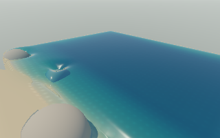
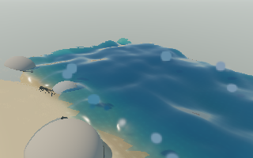
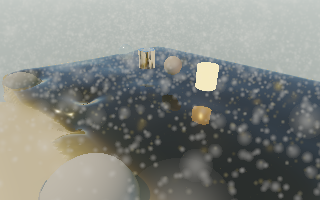

November 10, 2026 · AMD Radeon Pro 560X · Deno 2.9.8 / wgpu / Metal
Actual native FPS: 5.25 → 7.62 (+45.3%). Simulation: 0.699 → 0.978× realtime (+39.9%). P95 frame intervals fall 214 → 152 ms. This restores useful CPU/GPU overlap without changing physics, image quality or frame limits.
Deno's completion call blocks before returning its Promise. The host now defers entering that binding by one microtask. The renderer submits the immutable frame, runs the existing CPU-only physics callback while the GPU renders, then awaits completion. Browser completion ordering is unchanged. The one-outstanding-frame guard, failure handling, resource retirement and timeout remain.
The underlying wait still blocks and adds a polling delay; this is not a fully asynchronous native bridge. A worker/RPC prototype passed bounded checks but measured slower than this smaller change, so it is not shipped.
640 × 400 native window, 320 × 200 scene render, resolution 1, 1,164 initial water markers, CPU/WebAssembly reference physics, simulation speed 1. 80 frames per run; discard 12 warmup frames. FPS and simulated time are measured across 67 complete wall-clock frame intervals. Startup and screenshot readback excluded. No concurrent graphics benchmarks.
| Run / raw evidence | FPS | Realtime | P95 frame interval |
|---|---|---|---|
| Original host | 5.32 | 0.709× | 215.0 ms |
| Original host repeat (final code, immediate policy) | 5.25 | 0.699× | 214.3 ms |
| Deferred native completion (final implementation) | 7.62 | 0.978× | 152.2 ms |
| Deferred completion exploratory run | 7.67 | 0.977× | 154.3 ms |
| Rejected worker/RPC prototype | 6.77 | 0.889× | 169.7 ms |
The repeat baseline uses the final code with --completion=immediate. The final deferred run is the selected comparison. Earlier runs support the direction of the gain; these are not statistical confidence intervals. Native still trails the earlier browser result of 12.88 FPS / 1.000×; no browser rerun is claimed.
Frozen 320 × 200 full-renderer linear RGB comparison: mean error 0, maximum error 0, no nonfinite values. Only the completion policy changes between those images. Playback screenshots are illustrative, not matched simulation-state comparisons.



Native validation: 7 feature checks, 7 connected GPU/CPU oracle cases plus 12 resident-state steps passed. Controls, wind, first-person look, orbit, glass/mirror/rock/light spawning, carving, rain, field debug, underwater day/night and reset were exercised. No device loss in completed scene runs.
67 focused unit/numerical tests passed, including submission/physics/wait ordering, unmodified browser order, frame guard, failed completion, timeout, resource retirement and exact CPU overlap. Web build and native build passed. Larger bundle warnings remain.
npm run build:native npm run start:native -- --width=640 --height=400 --resolution=1 --backend=safe --play --frames=80 --report=.native/after.json npm run start:native -- --width=640 --height=400 --resolution=1 --backend=safe --play --frames=80 --completion=immediate --report=.native/before.json npm run test:native
The native README includes the frozen-image and bounded GPU feature-check commands. Reports use completed frame timestamps, not an average of the on-screen FPS label.
SIMD is queued separately. Next native leads are genuinely asynchronous completion/map operations, the remaining full-precision MRT split cost, and native GPU timestamps. Keep completion/workload guards. Windows/RTX and long/busy-scene performance need independent measurements. An early direct-worker surface probe was rejected by AppKit's main-thread requirement; the corrected main-thread GPU / CPU-worker trial ran successfully but lost on throughput.
Machine-readable summary · Deno completion source · Previous native/browser comparison